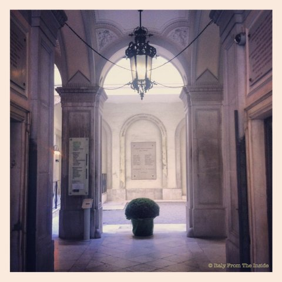

Something that makes Italy very unique is the fact that wherever you go you bump into something artistic. This, for example, is the lobby of the Public Library in Trieste. I walked in front of it so many times and yet I never stopped to admire it. But this time I did. And I'm sharing it with you. PS: Don't forget to subscribe to our blog to get more insights on beautiful Italy!